Have you read the diary entry of a student named Sibi. What are the food
items mentioned in the diary entry?
Besides these, what are the other food items you have had? Prepare a list
of them.
The food we eat has a very long history. Don't you wish to know that
history?
Obtaining Food
You know that food is one of the essential elements for human survival.
All living things need food. Their food during early times was mainly
leaves, fruits, tubers and grains. Besides, some creatures killed other
creatures and had their food. In the beginning, humans were also like
that.
October 16
Today there was a food fest
in our school in connection
with World Food Day. How
interesting it was! All of us
brought different dishes as
our teacher had instructed.
I visited every stall with my
friends. What a variety of
dishes! Variety of dishes made
from tapioca, jackfruit, millets,
tubers and fruits were there…
Many food items like laddu,
halwa, payasam, cakes, sweets
and pickles were also there.
Oh! seeing all those, my mouth
watered. Then our class teacher
also joined us. Teacher bought
us sweets and payasam. How
tasty it was! These flavours still
stay on my tongue.
2
Food and Human
Page 27

Page 28
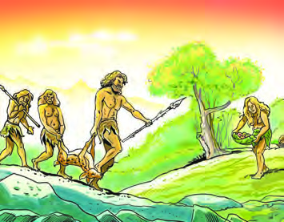
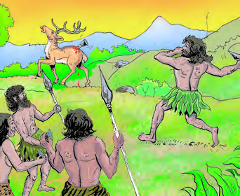
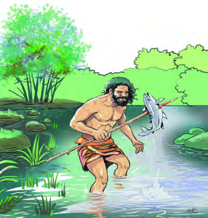
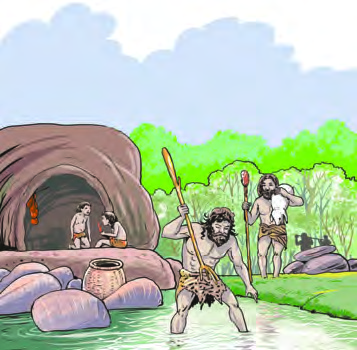

28
Social Science Class V
The pictures given above indicate the different methods of obtaining
food by the early humans. What details do you understand from
these pictures about the obtaining of food of early humans?
•
They gathered food.
•
•
What might be the food items they had obtained through hunting and
gathering?
•
Fruits and vegetables
•
Roots and tubers
•
•
•
•
Look at the pictures given.
Fire and Food
Did the early humans cook the food items they had obtained through
hunting and other means?
Page 29
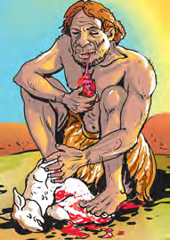
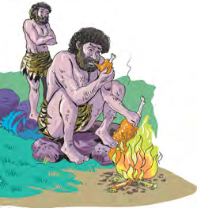

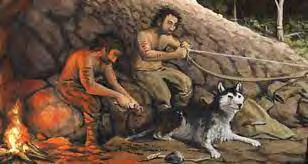
29
Food and Human
Dog was the first animal domesticated by
humans. Since dogs was easily tamable,
they were used for watching and hunting.
However with the spread of agriculture, humans
started to domesticate other animals for food and
other needs.
Food Production
Over a period of time, humans started domesticating animals and plants
for their daily food. Initially they domesticated sheep and goats for food.
In earlier times, they ate
food raw, as they did not
know the use of fire. But
when they learned to use
the fire in a controlled
manner they started to
cook and eat.
Use of fire for cooking is
an important landmark in the history of
human food pattern. The first cooked food
they ate was probably the meat of dead animals in
wildfire. After learning how to make and control
fire, they began to cook meat and fish. Gradually,
they began to roast and eat roots and tubers. That
is how humans developed the culture of cooking
and eating.
The nomadic man hunted and gathered only the
food they needed for the day. Later, they were forced to find some other
means to obtain food.
Fire: Production
and Control
Humans observed
that fire was produced
when the dry branches of trees
rubbed against each other or
against the surface of rocks.
Thus, they learned that fire
could be made by rubbing
dry woods against rocks or
by rubbing stones.
What were the possible conditions that forced early humans find other
ways to obtain food?
•
Scarcity of food.
•
Rise in population
•
Environmental changes
•
•
•
Page 30

30
Social Science Class V
Early humans might have started thinking about agriculture when they
noticed seedlings sprouting from discarded food items. If the seeds were
left on the rock, they would dryout. If put in water, they would get rotten.
However, humans learned that seeds germinate in moist and warm soil.
Thus, cultivation of crops started. Then the edible plants, roots and
saplings were selected, planted and cultivated. In the early days wheat,
barley, little millet and tubers were cultivated. Humans started agriculture
mainly on river banks where the essential water and fertile soil were
available. Following this, people who wandered in search of food began
to settle near the farms.
What advantages might they have had by settling near the agricultural
sites?
•
They could protect the agricultural sites.
•
There was no need to wander around in search of food
•
Availability of food items increased
•
Got more time to rest.
•
Early Agricultural Tools
The earliest agricultural tools
used by humans were sticks, stones, horns
and bones. These tools were used to till
the soil and sow the seeds.
How might river banks have helped early humans to settle? Discuss.
Storage of Food Items
Early humans gathered their
food only for their day to day
life. But with the advancement of
agriculture, humans got more
food than they needed. Special
facilities were needed to store
what was left over after the daily
requirement. What would they have used to store excess food?
•
Pottery
•
Bags made of animal skin
•
Baskets made of bamboo reed
•
•
What were the changes brought about in human life following the
domestication of animals and plants? How did they rear plants?
Page 31
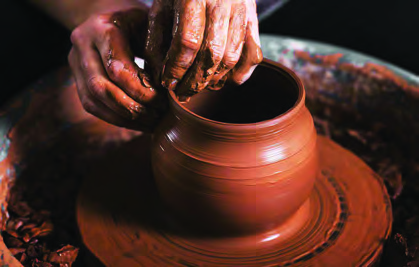

31
Food and Human
As we know, mud brick dissolves
in water. But humans understood
that if soil is kneaded, moulded
and baked into pots, water can be
collected and boiled in them. In
earlier days pottery was made by
kneading clay with hand. As
agriculture became widespread,
earthenware of various types and
sizes were needed to store grains. They were also used for cooking food.
The discovery of the wheel to make pottery was a major turning point in
human history. This led to the spread of pottery. There is evidence of
granaries constructed in early times to store food grains.
Granary
The Indus Valley Civilization or Harappan Civilization was a river valley
civilization that existed in Ancient India. One of the most important features of
this civilization is the granary. They were built of bricks. Grains were brought
from distant villages and stored in these granaries.
Big jars named bharani and large wooden bins named pathayam
were used in our places to store grains. What other food storage
methods might have been adopted the people of that age. Ask
your elders about them.
Exchange of Food Items
Did early humans simply store excess food items for later use only?
The excess food was not only stored for later use but also exchanged
with those in need.
How could such exchanges have taken place?
In order to get what they needed, each one exchanged the goods they
had stored, with others.
What kind of vessels are used in your home for cooking and
storing food?
Page 32
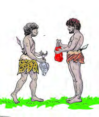
32
Social Science Class V
Urban centres
Complete the flow chart which indicates the formation of urban centres.
Exchange of Food Items in South India
Literary works of the Sangam Age indicate that
exchange of food items existed in South India about
1500 years ago. People in each region exchanged
the food they collected with those in other regions
and received what they needed from them. Those who lived
in coastal areas exchanged dried fish and salt with those in
other areas. Instead, other food items and resources from
the forest were accepted from others. The people in forest
areas exchanged forest resources to those in other areas.
The people lived in the plains exchanged their agricultural products with those
living in other areas.
System of Exchange
Before the introduction the system of coinage, there was a practice of exchanging
goods with each other. This method of exchange is known as 'Barter System'.
Such exchanges broughtout many
changes in society. Exchange of goods
led to trade and eventually markets
were formed. Markets were developed
into trading centres. People went to
trading centres to buy and sell goods
and these gradually developed into
urban centres.
In the early days, what
materials and means
would the people of
Kerala have used to collect, transport
food and exchange food ? Discuss it.
Exchange of goods
.................................................
.................................................
.................................................
Page 33
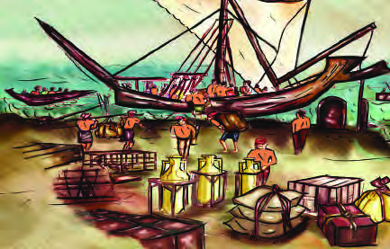
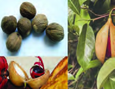
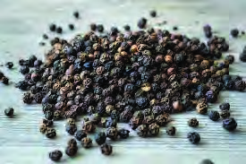

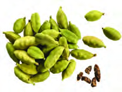
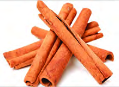
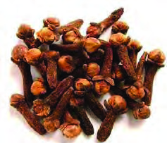
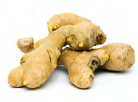
33
Food and Human
Discuss and prepare a collage on the topic ‘Exchange of goods
and formation of urban centres’ and exhibit in the classroom.
Exchange of Food Items Across Lands
The exchange of food items was
not confined to any particular
region. This exchange spread
across the lands.
Since early times, we had exchange
of goods with distant lands. These
exchanges were mainly with the
Romans, the Chinese, the Arabs,
the Persians and the Jews.
Identify the spices in the picture and write a short note on them.
The spices that were exchanged
mainly from India with other
lands
were
black
pepper,
cardamom, ginger, cloves and
cinnamon.
Of
these,
black
pepper which was also known
as 'Black Gold' become the
foreigners' favourite.
Vasco da Gama
Find out the spices that are cultivated in your region.
It is said in historical records that
Vasco da Gama, a Portuguese
traveller who came to India,
took goods worth sixty times
the cost of his journey when
he returned to Europe.
ST-299-3-SOC. SCI.(E)-5-VOL-1
Page 34
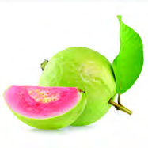
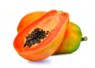
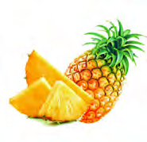
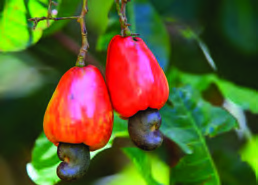
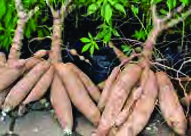
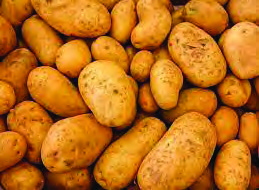
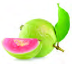
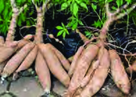

34
Social Science Class V
Guava
Papaya
Pineapple
It was the expansion of trade that led to the exchange of food items
between distant lands. The pictures of some of the food items that became
popular in India as a result of such exchanges are given below.
Exchange of food items is going on. In addition to trade, people travel to
different parts of the world for employment, education, leisure, etc.,
making this exchange more widespread.
Cashew Nut
Tapioca
Potato
Let’s make Identity Card.
•
Guava
•
Birth Place : Mexico
•
'Apple of Tropics'
•
Brought to India by the Portuguese
•
Contains Vitamin A, B and C
Like this, find the birthplace of other food items and make identity cards. Display
the prepared identity cards in the classroom.
...............................
........................................
........................................
..............................................
..........................
Aren’t you familiar with all the food items shown in the picture? Do
these food items have their origin in our land? Findout.
Page 35


35
Food and Human
Food and Inequality
There were various types of inequalities in our country, related to food.
Social inequalities prevented people of all classes from dining together.
Under the leadership of social reformer Sahodaran Ayyappan an inter
dining initiative named Misrabhojanam was held at Cherai in Ernakulam,
against this discrimination.
You have seen that many fruits and other food items that we eat
have been brought here from other countries. Make a list of the
food dishes that have spread among us from other countries. Find
out their place of origin.
How did the expansion of trade lead to the exchange of food items
between distant lands?
Misrabhojanam
On 29th May 1917, under the leadership of Sahodaran
Ayyappan, an inter dining named Misrabhojanam
was organised at Cherai in Ernakulam district. This
protest was held against the denial of the rights of all sections
of the people to dine together. Sahodaran Ayyappan had to
face strong opposition as he had led the Misrabhojanam.
This reveals the social inequality that existed in Kerala. Caste system was the
cause of this inequality.
Do caste discriminations related to food still exist in our country?
Such discriminations are prohibited in our country by law.
Not only social but economic discrimination also pose a challenge to
equality in food distribution.
Make a note on the topic 'Inequalities in Food'.
Sahodaran Ayyappan
Page 36
36
Social Science Class V
Glimpses of Starvation
Observe these news headlines.
What are the pieces of information you get from these news headlines?
•
Starvation still exists in many parts of the world.
•
•
The food that is necessary to maintain health is the right of every human
being. But there are thousands in many parts of the world without even
a single meal to sustain life. Climate changes, war, unemployment etc.
cause poverty and starvation.
Climate change: Report
says that starvation in
country will rise
Hungry children are
crying: Heavy starvation
in Syria
The war in Ukraine:
Global food crisis to
intensify
Severe drought: Millions
of children starved in
Somalia.
Famine in Bengal
People waiting for food in
the famine hit area of Bengal
Excessive economic exploitation
during the British period in India
led to famine and consequently
many people died.
Bengal famine in 1943 is a typical example
for this. Agriculture was the main livelihood
of the people of Bengal. Paddy fields were
extensively destroyed as a result of the heavy
storm on the Bengal coast. Subsequently,
there occurred a food crisis in Bengal. About
30 lakh people died of starvation during
this famine.
Page 37


37
Food and Human
Another reason for starvation is the inequality in the distribution of
wealth. Wealth is not distributed equally to all. So, while some people
eat their fill, others starve.
With a view to strengthening the efforts against poverty and starvation
and ensuring food for all, World Food Day is observed on 16th October
every year. Kerala is a model state for implementing various schemes for
poverty alleviation. Kudumbashree Mission, a project launched by the
Government of Kerala for poverty alleviation is an example for this.
National Food Security Act 2013
The National Food Security Act came into force in India in 2013. The
objective of this act is to ‘ensure food security for all’. A strong Public
Distribution System exists in our country with this object.
What can each of us do to create a world without starvation?
Discuss.
Food and Health
As we know, food is one of the basic needs that sustain human life. Food
has an important role in maintaining health. We can maintain our
physical and mental health by taking nutritious food. But, unhealthy
food habits lead to many lifestyle diseases.
Organise a Food Day Rally in the school by making placards
with the Food Day message.
Share food with others...
Don't waste food...
Don't waste food.
Page 38
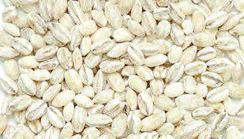
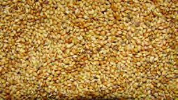
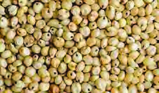
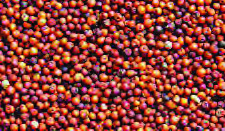
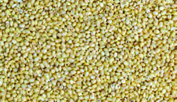
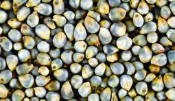

38
Social Science Class V
Ragi (Finger Millet)
Barley
Foxtail Millet
Jowar (Sorghum)
Kodo Millet
Pearl Millet
International Year of Millets 2023
2023 has been selected as the International Year of Millets by the
United Nations. The main objective of the International Year of
Millets is 'to promote the production and consumption of millets'. Millets are
grassy crops from which cereals are produced. Millets include Jowar, Ragi, Kodo
Millet, Foxtail Millet etc. Millets can control cardiac issues and other lifestyle
diseases. So nutritious millets should be included in our daily diet.
Prepare a note on the topic 'Unhealthy Food Habits and Lifestyle
Diseases'.
Access to food is a legal right of every citizen. We should use the food we
get judiciously. Wasting food is the cruelty we do to those who don't
even get a single meal. Therefore, everyone should realise that the food
we waste belongs to others as well.
Page 39
39
Food and Human
1.
Do you think the elders in your home would have eaten in their childhood
the same food that you eat now? Shall we conduct an enquiry? Ask the
elders and record the details in your notebook. Prepare a manuscript
magazine on the topic ‘Changes in Diet Habits’ with pictures based
on the details collected.
2.
How do human made and other disasters such as war, drought and
flood become threats to food security of the world? Organise a photo
exhibition.
3.
Organise an exhibition in school by collecting pictures of storage
facilities and kitchen utensils used in the past.
4.
Collect millets, stick them on a chart with short descriptions and
display in your classroom. Organise a food festival along with that in
your school.
5.
Make a note of the food items in the kitchen garden of your school.
6.
Sketch pictures of hotels and markets where food items are available
in your area and display them in your class.
7.
Conduct interviews with health personnel on the topic ' Healthy Food
Habits'.
Extended Activities